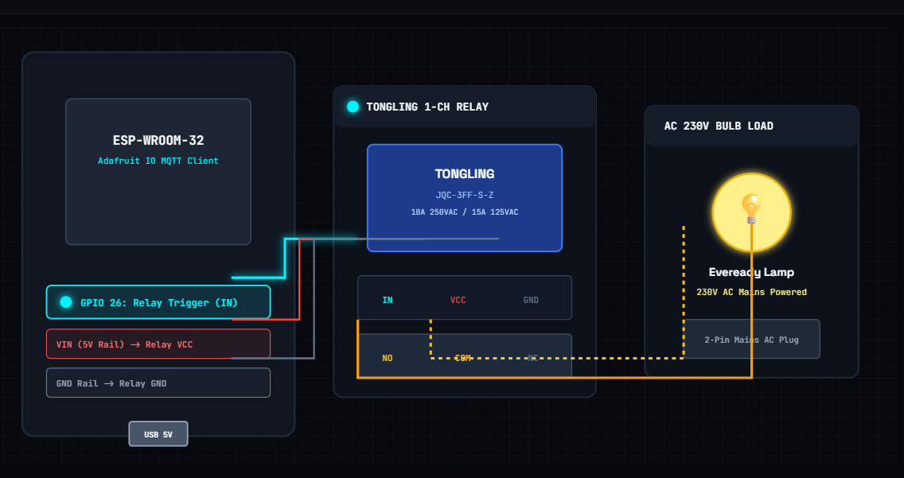
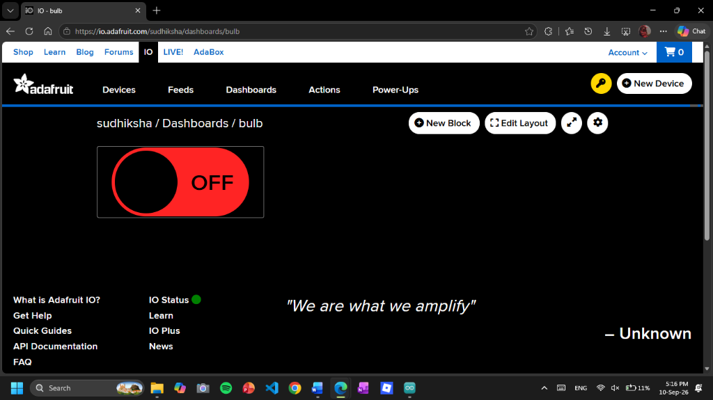
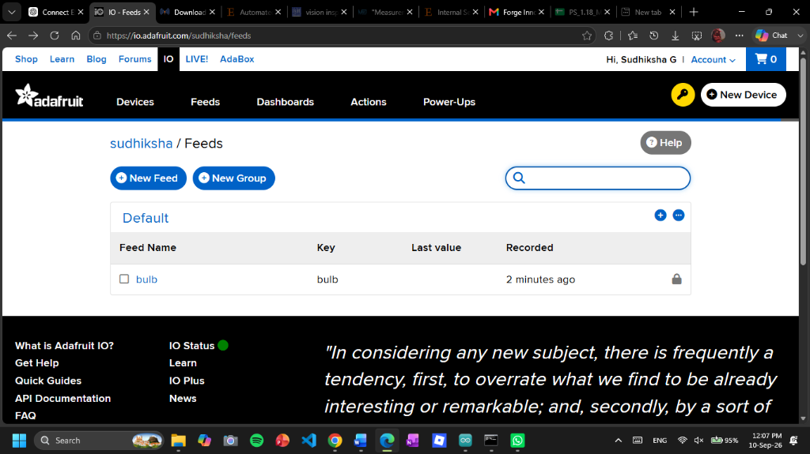
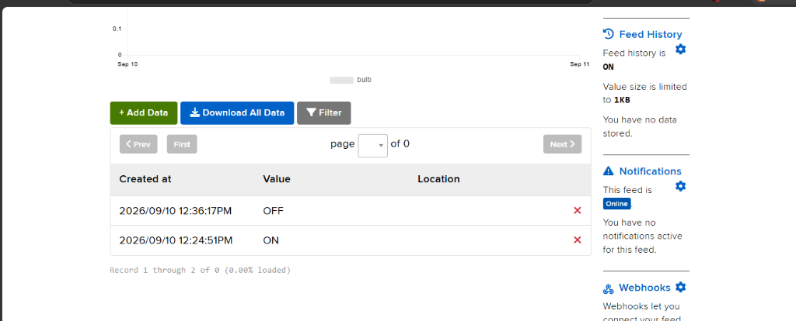
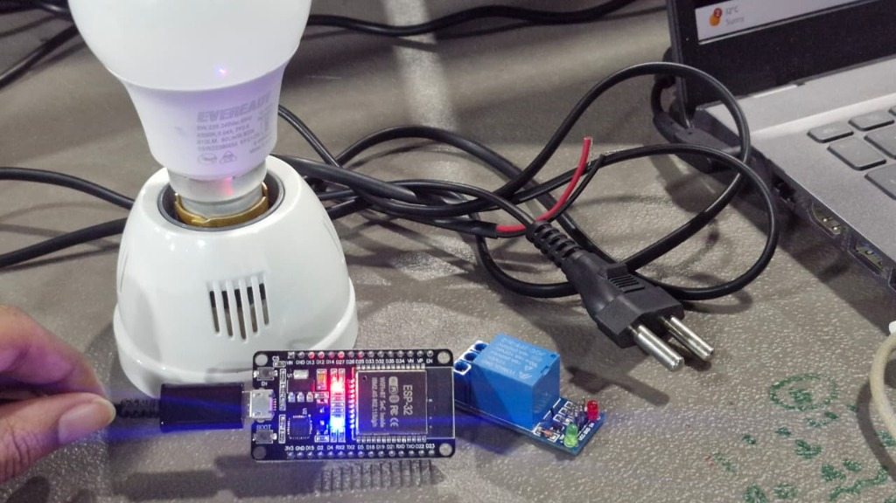
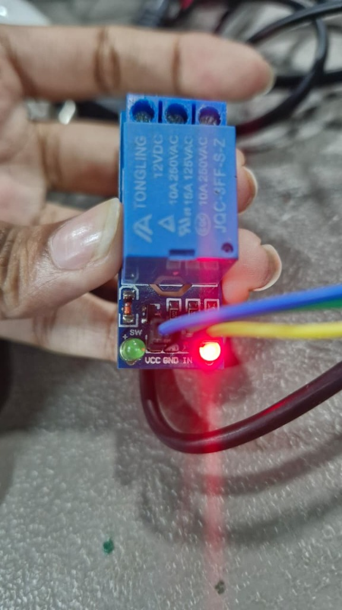
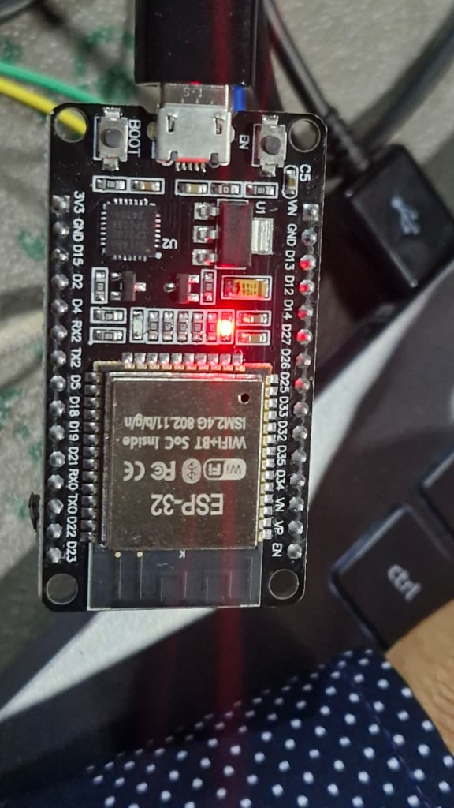
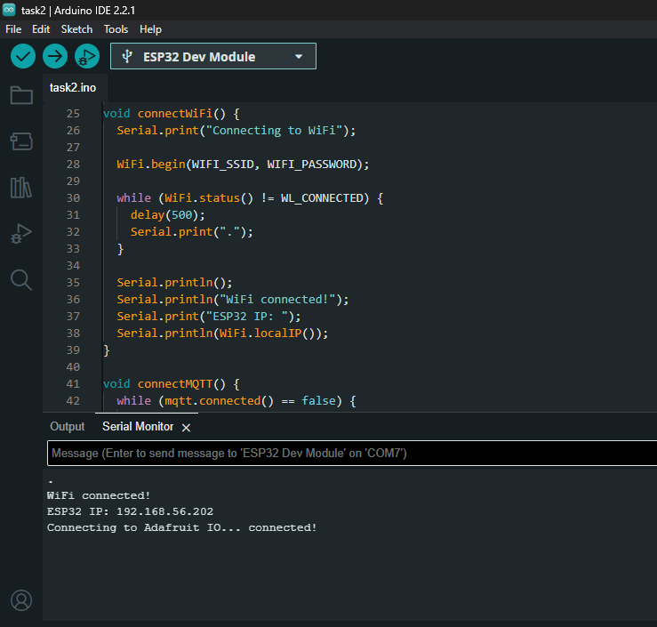
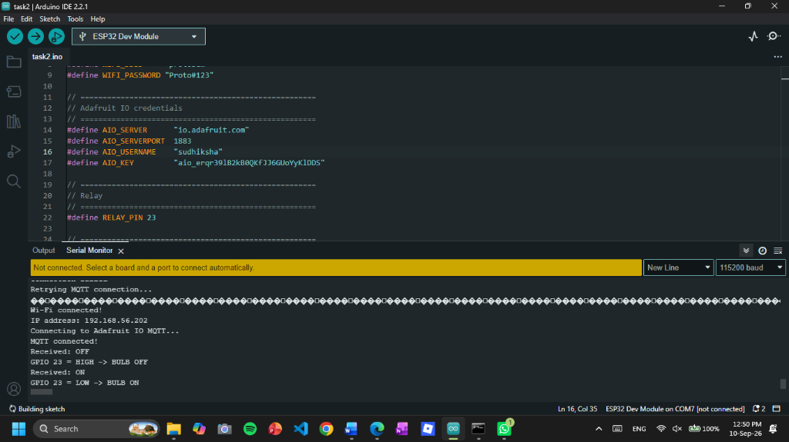

Task 02: Adafruit IO MQTT Control
Transitioning from localized HTTP requests to decoupled cloud publish-subscribe messaging over the global internet. Integrating Adafruit IO MQTT broker, an NPN transistor hardware driver stage, and a tactile push button for seamless two-way state synchronization.
1. Overview
Task 1 demonstrated direct, local-network device control using HTTP. This task moves the architecture to the internet by introducing cloud-based messaging through the MQTT protocol and the Adafruit IO cloud broker.
The ESP32 connects to the local Wi-Fi network and establishes a persistent client connection to Adafruit IO's MQTT broker. An Adafruit IO dashboard provides a virtual toggle switch linked to a feed named bulb. When the toggle state changes, the cloud broker delivers an ON or OFF payload to the ESP32 because the microcontroller is subscribed to that feed.
Upon receiving the message, the ESP32 changes the logic level on GPIO 5. Because a microcontroller GPIO pin provides a low-current control signal rather than a heavy power supply, an NPN transistor driver stage is used to electronically switch the load circuit.
To complete the two-way IoT loop, a physical push button is connected to GPIO 4 as a local manual override. Pressing the button toggles the local output and immediately publishes the updated state back to the same Adafruit IO feed. The remote cloud dashboard toggle updates to reflect the physical button press, establishing a fully synchronized, bidirectional IoT control loop.
2. What Changed From Task 1?
Task 1 established direct device communication within a single local router network. Task 2 transitions from localized point-to-point requests to decoupled, cloud-brokered publish-subscribe messaging:
- Network Scope: Task 1 operated strictly on the local Wi-Fi subnet; Task 2 connects to the global internet via cloud broker.
- Communication Paradigm: Task 1 used synchronous HTTP request-response; Task 2 uses asynchronous MQTT publish-subscribe.
- Direct vs Brokered Addressing: Task 1 required the browser to directly reach the ESP32's local IP; Task 2 connects both the dashboard and the ESP32 to a central broker without either knowing the other's IP address.
- Persistent Messaging: Rather than polling or sending full HTTP page requests, MQTT maintains a lightweight, long-lived TCP connection suited for IoT telemetry and control.
3. Learning Objectives
- Understand MQTT's publish/subscribe architecture.
- Understand the role of an MQTT broker in decoupling clients.
- Understand publishers and subscribers.
- Create and configure an Adafruit IO feed and dashboard.
- Connect an ESP32 to Adafruit IO over the internet.
- Subscribe the ESP32 to a cloud feed.
- Publish device state updates back to the cloud.
- Build and solder a transistor-based driver circuit.
- Read a digital push button using internal
INPUT_PULLUP. - Keep physical hardware and cloud dashboard states synchronized.
- Handle network dropouts and MQTT reconnection routines.
- Understand why an ESP32 GPIO must not directly power a load.
- Perform continuity testing on a soldered perfboard circuit with a multimeter.
- Understand the fundamentals of scalable cloud IoT communication.
4. System Architecture
The communication architecture is divided into two distinct, synchronized flows mediated entirely by the Adafruit IO broker:
5. Components & Hardware
INPUT_PULLUP) for local manual state toggle.io.adafruit.com:1883) hosting the bulb feed and interactive web toggle dashboard.6. Hardware Configuration & Wiring Schematic
The physical implementation interfaces the low-voltage ESP32 microcontroller with a 5V optocoupled relay module switching an Eveready 230V AC incandescent bulb fixture:

- VIN (5V Rail): Connected to Relay Module
VCCto power the internal relay coil. - GND: Tied to Relay Module
GNDfor common reference. - GPIO (Output Pin): Connected to Relay Module
IN(trigger pin).
- Common (COM): Connected to the 230V AC mains line via the 2-pin wall plug.
- Normally Open (NO): Wired to the positive contact of the Eveready bulb lamp.
- Neutral Return: Directly connects the second bulb terminal to the mains return line.
LOW (0V) forward-biases the optocoupler, energizing the electromagnetic coil to pull the NO contact closed and illuminating the bulb. Writing HIGH (3.3V) de-energizes the coil, releasing the contact and extinguishing the bulb.
7. Software Stack
- Arduino IDE: Firmware editor, compiler, and serial monitor environment.
WiFi.h: Native ESP32 Wi-Fi library managing station connection to the local 2.4 GHz access point.- Adafruit MQTT Library: Uses
Adafruit_MQTT.handAdafruit_MQTT_Client.hto manage low-overhead MQTT packet serialization, subscriptions, publications, and keepalive pings. - Adafruit IO: Cloud MQTT broker infrastructure providing feed storage and interactive dashboard widgets.
8. MQTT Explained
MQTT (Message Queuing Telemetry Transport) is a lightweight, publish-subscribe network protocol designed for resource-constrained embedded systems and unreliable network environments.
ON or OFF to the feed.bulb feed to capture commands dispatched by the dashboard.Crucially, the dashboard and the ESP32 do not talk to each other directly. The ESP32 does not need to know the IP address of the browser, and the dashboard does not need to know the IP address of the ESP32. Both clients maintain independent connections to the broker.
9. MQTT vs HTTP
| Attribute | Task 1 (HTTP) | Task 2 (MQTT) |
|---|---|---|
| Communication Model | Request - Response | Publish - Subscribe |
| Connection Topology | Client directly contacts ESP32 server | Clients communicate through central broker |
| Network Scope | Local Wi-Fi subnet only | Global Internet / Cloud access |
| Command Addressing | URL endpoints (e.g. /on, /off) |
Feeds / Topics (e.g. username/feeds/bulb) |
| ESP32 Role | Hosts local web server on port 80 | Operates as lightweight client to cloud broker |
| Connection Overhead | Full HTML page reloaded per command | Persistent TCP connection with small payload packets |
| Ideal Use Case | Direct local configuration web page | Asynchronous, multi-device IoT telemetry and control |
10. Adafruit IO Architecture
Adafruit IO hosts both the MQTT broker service and the dashboard presentation layer under a unified cloud account:
The subscription path is structured as AIO_USERNAME "/feeds/bulb". The username is embedded in the topic path to isolate client feeds. In public documentation, real credentials must always be replaced with placeholders:
#define AIO_SERVER "io.adafruit.com"
#define AIO_SERVERPORT 1883
#define AIO_USERNAME "YOUR_AIO_USERNAME"
#define AIO_KEY "YOUR_AIO_KEY"
bulb feed under account sudhiksha.
bulb feed under the default user feed namespace.
ON and OFF ASCII payload states transmitted across the MQTT broker.11. Feed / Topic Structure
The bulb feed acts as the single shared message channel between cloud and hardware. Only two ASCII payload strings are exchanged across this channel: ON and OFF.
"ON" → ESP32 drives GPIO 5 HIGH.Toggle set OFF → Publishes
"OFF" → ESP32 drives GPIO 5 LOW.
outputState and instantly publishes "ON" or "OFF" back to the feed, synchronizing the cloud slider.
12. Dashboard → ESP32 Control Flow
When the user toggles the switch on the web dashboard, the downlink flow executes as follows:
- User flips the toggle switch on the Adafruit IO dashboard.
- Adafruit IO publishes the string
"ON"or"OFF"to thebulbfeed. - The cloud MQTT broker distributes the packet to all active subscribers of that feed.
- The ESP32 is subscribed to
AIO_USERNAME "/feeds/bulb". - In the execution loop,
mqtt.readSubscription(100)detects the incoming packet. - The program confirms that the subscription pointer matches
&bulbFeed. - The payload is cast to a string:
String msg = (char *)bulbFeed.lastread;. - The message is evaluated:
setOutput(msg == "ON");. - The
setOutput()routine sets GPIO 5 toHIGHorLOW. - The base resistor limits current, driving the NPN transistor into saturation to switch the load.
13. Push Button → Dashboard Feedback Flow
The uplink flow handles manual override from the physical button:
- The main loop reads the digital logic level of GPIO 4:
int reading = digitalRead(BUTTON_PIN);. - Due to internal pull-up configuration, released is
HIGHand pressed isLOW. - The edge detector identifies a press:
reading == LOW && lastButton == HIGH. - A 250ms debounce filter prevents contact chatter from triggering multiple false toggles.
- The output state is inverted:
setOutput(!outputState);. - The new state is published to Adafruit IO:
bulbPub.publish(outputState ? "ON" : "OFF");. - The MQTT broker forwards the update to the dashboard widget, keeping cloud and hardware in sync.
14. Transistor Driver Circuit
Microcontroller GPIO pins are designed to provide low-current logic level signaling (typically under 12–20 mA on the ESP32), not to supply heavy operating current directly to loads. Drawing excessive current directly from a GPIO pin causes brownouts, overheating, or internal silicon destruction.
An NPN bipolar junction transistor (BJT) solves this by functioning as an electronically controlled switch:
- Base (B): Connected to GPIO 5 through a current-limiting base resistor. Supplying a small base current turns the transistor ON.
- Collector (C): Connected to the negative terminal of the load, with the positive terminal tied to the external power rail.
- Emitter (E): Connected directly to circuit ground (GND).
- Switching Behavior: When GPIO 5 is driven HIGH, base current flows, driving the transistor into saturation. This creates a low-resistance path between collector and emitter, completing the circuit to energize the load.
15. Implementation Process
- Created an Adafruit IO account.
- Created a new feed named
bulb. - Built a dashboard and added a Toggle block linked to the
bulbfeed. - Retrieved the Adafruit IO username and the private Active Key.
- Assembled the NPN transistor switching circuit on a perfboard.
- Wired ESP32 GPIO 5 to the transistor base through the current-limiting resistor.
- Wired the push button between ESP32 GPIO 4 and ground.
- Checked all soldered joints and wiring with a digital multimeter for continuity and isolation.
- Configured Wi-Fi credentials and Adafruit IO parameters in the Arduino IDE sketch.
- Compiled and uploaded the firmware to the ESP32 DevKit V4.
- Monitored the Serial Monitor to verify successful Wi-Fi connection and IP assignment.
- Verified that the ESP32 connected to
io.adafruit.com:1883and subscribed to the feed. - Tested remote control: toggling the Adafruit IO dashboard switch verified load activation.
- Tested manual control: pressing the physical push button verified local switching and confirmed the dashboard toggle followed immediately.
16. Wi-Fi Connection
The microcontroller initializes network connectivity using:
WiFi.begin(WLAN_SSID, WLAN_PASS);
while (WiFi.status() != WL_CONNECTED) {
delay(500);
Serial.print(".");
}
The program halts in a blocking loop until the Wi-Fi status returns WL_CONNECTED. This enforces the fundamental architectural dependency: Wi-Fi connection → Internet access → Adafruit IO connection → MQTT messaging.
17. MQTT Connection
The client object is instantiated with the server parameters:
Adafruit_MQTT_Client mqtt(&client, AIO_SERVER, AIO_SERVERPORT, AIO_USERNAME, AIO_KEY);
The client targets io.adafruit.com on standard MQTT TCP port 1883. Port 1883 represents unencrypted MQTT communication. The Adafruit IO Key acts as the authentication token and must never be exposed publicly.
18. Subscription
The subscription object binds the client to the specific topic string:
Adafruit_MQTT_Subscribe bulbFeed = Adafruit_MQTT_Subscribe(&mqtt, AIO_USERNAME "/feeds/bulb");
...
mqtt.subscribe(&bulbFeed);
Calling mqtt.subscribe(&bulbFeed) informs the broker that this client must receive all messages published to that feed.
19. Message Handling
In the main execution loop, incoming packets are inspected non-blockingly:
Adafruit_MQTT_Subscribe *sub;
while ((sub = mqtt.readSubscription(100))) {
if (sub == &bulbFeed) {
String msg = (char *)bulbFeed.lastread;
Serial.print("Received: ");
Serial.println(msg);
setOutput(msg == "ON");
}
}
The condition sub == &bulbFeed ensures the message originated from the expected feed. The buffer is read as a string and evaluated with setOutput(msg == "ON"), activating the pin if the payload is ON and deactivating it for any other value.
20. Output Control
A centralized helper function encapsulates the GPIO manipulation:
void setOutput(bool on) {
outputState = on;
digitalWrite(OUTPUT_PIN, on ? HIGH : LOW);
}
Centralizing the logic into setOutput() prevents duplication. Both incoming MQTT packets and local button presses invoke the same function, maintaining a single, consistent source of truth for the physical hardware state.
21. Manual Override
To provide local tactile control, the push button is polled in the main loop:
int reading = digitalRead(BUTTON_PIN);
if (reading == LOW && lastButton == HIGH && millis() - lastPress > 250) {
lastPress = millis();
setOutput(!outputState);
bulbPub.publish(outputState ? "ON" : "OFF");
}
lastButton = reading;
The condition reading == LOW && lastButton == HIGH detects the falling edge (button press event) rather than triggering continuously while the button is held down. The millis() - lastPress > 250 clause provides non-blocking software debouncing, ignoring mechanical contact vibrations.
22. Keeping Dashboard State in Sync
A common flaw in simple IoT systems is state divergence—where a physical switch is toggled, but the cloud app still displays the old state.
In this implementation, pressing the physical button immediately publishes the updated state back to the same bulb feed via bulbPub.publish(...). The Adafruit IO dashboard listens to the feed it controls, so the toggle widget slides to match the physical state automatically. Both controls remain permanently synchronized.
23. Connection Reliability
Because network drops are common in IoT deployments, connection management is implemented:
void MQTT_connect() {
if (mqtt.connected()) return;
int8_t ret;
uint8_t retries = 3;
while ((ret = mqtt.connect()) != 0) {
mqtt.disconnect();
delay(5000);
if (--retries == 0) ESP.restart();
}
}
If the broker connection drops, the function attempts up to 3 reconnection cycles. If the connection cannot be restored, ESP.restart() triggers a hardware reset to clear network buffers and start clean.
Additionally, every 30 seconds the ESP32 sends a ping packet via mqtt.ping() to prevent router NAT timeouts and verify active broker responsiveness.
24. Complete Firmware Code
#include <WiFi.h>
#include "Adafruit_MQTT.h"
#include "Adafruit_MQTT_Client.h"
#define WLAN_SSID "YOUR_WIFI_NAME"
#define WLAN_PASS "YOUR_WIFI_PASSWORD"
#define AIO_SERVER "io.adafruit.com"
#define AIO_SERVERPORT 1883
#define AIO_USERNAME "YOUR_AIO_USERNAME"
#define AIO_KEY "YOUR_AIO_KEY"
const int OUTPUT_PIN = 23; // Connected to Relay Module trigger pin (IN)
const int BUTTON_PIN = 4; // Push button to GND
WiFiClient client;
Adafruit_MQTT_Client mqtt(&client, AIO_SERVER, AIO_SERVERPORT, AIO_USERNAME, AIO_KEY);
Adafruit_MQTT_Subscribe bulbFeed = Adafruit_MQTT_Subscribe(&mqtt, AIO_USERNAME "/feeds/bulb");
Adafruit_MQTT_Publish bulbPub = Adafruit_MQTT_Publish(&mqtt, AIO_USERNAME "/feeds/bulb");
bool outputState = false;
int lastButton = HIGH;
unsigned long lastPress = 0;
unsigned long lastPing = 0;
void setOutput(bool on) {
outputState = on;
// Active-LOW relay module logic: LOW turns ON, HIGH turns OFF
digitalWrite(OUTPUT_PIN, on ? LOW : HIGH);
}
void MQTT_connect() {
if (mqtt.connected()) return;
Serial.print("Connecting to MQTT... ");
int8_t ret;
uint8_t retries = 3;
while ((ret = mqtt.connect()) != 0) {
Serial.println(mqtt.connectErrorString(ret));
mqtt.disconnect();
delay(5000);
if (--retries == 0) ESP.restart();
}
Serial.println("connected");
}
void setup() {
Serial.begin(115200);
pinMode(OUTPUT_PIN, OUTPUT);
pinMode(BUTTON_PIN, INPUT_PULLUP);
setOutput(false);
WiFi.begin(WLAN_SSID, WLAN_PASS);
while (WiFi.status() != WL_CONNECTED) {
delay(500);
Serial.print(".");
}
Serial.println("\nWiFi connected");
mqtt.subscribe(&bulbFeed);
}
void loop() {
MQTT_connect();
// Message from the dashboard
Adafruit_MQTT_Subscribe *sub;
while ((sub = mqtt.readSubscription(100))) {
if (sub == &bulbFeed) {
String msg = (char *)bulbFeed.lastread;
Serial.print("Received: ");
Serial.println(msg);
setOutput(msg == "ON");
}
}
// Manual push button
int reading = digitalRead(BUTTON_PIN);
if (reading == LOW && lastButton == HIGH && millis() - lastPress > 250) {
lastPress = millis();
setOutput(!outputState);
bulbPub.publish(outputState ? "ON" : "OFF");
}
lastButton = reading;
// Keep the connection alive
if (millis() - lastPing > 30000) {
lastPing = millis();
if (!mqtt.ping()) mqtt.disconnect();
}
}25. Code Breakdown
WiFi.h handles the physical wireless connection; Adafruit_MQTT.h and Adafruit_MQTT_Client.h handle the MQTT protocol state machine.io.adafruit.com:1883), username, and private AIO authentication key.bulbFeed subscription object, and bulbPub publication object targeting the same feed path.outputState with the electrical state of GPIO 5.OUTPUT and INPUT_PULLUP), Wi-Fi connection, and registers the MQTT subscription.Demonstration Media & Bench Evidence
Photographic, telemetry, and video verification documenting the laboratory implementation, cloud dashboard actuation, serial communication logs, and physical relay switching:
Physical Laboratory & Hardware Setup



Arduino IDE & Serial Monitor Diagnostics
Direct screenshots captured from the Arduino IDE 2.2.1 Serial Monitor at 115200 baud, demonstrating Wi-Fi association, broker handshake, and incoming MQTT command execution:

192.168.56.202), and TCP connection to io.adafruit.com:1883.
Received: ON → GPIO = LOW → BULB ON and Received: OFF → GPIO = HIGH → BULB OFF.Demonstration Video
Video capture demonstrating real-time cloud-to-hardware MQTT control of the physical 230V AC bulb from the Adafruit IO dashboard:
Live bench video demonstration capturing cloud-to-hardware actuation: toggling the virtual switch on the Adafruit IO dashboard via the laptop immediately transmits an MQTT command across the internet to the ESP32, switching the 5V relay and energizing the 230V Eveready AC light bulb.
26. Testing & Verification
The system was systematically tested across each network and hardware boundary:
io.adafruit.com:1883 and subscription registration to the bulb feed."ON", GPIO 5 drove HIGH, transistor saturated (Vce ≈ 0.1V), and the load energized."OFF" received, GPIO 5 pulled LOW to cut base current, and the load de-energized.27. Failure Cases & Debugging
INPUT_PULLUP is enabled in firmware.28. Security Considerations
- Credential Isolation: Wi-Fi passwords and Adafruit IO authentication keys must never be committed to public repositories. Placeholders (e.g.
YOUR_AIO_KEY) must always be used in public portfolios. - Authentication Token: The Adafruit IO Key provides full API access to all account feeds and should be treated as a confidential secret.
- Unencrypted Transport: Port 1883 utilizes plain unencrypted TCP. While adequate for educational bench prototypes, commercial systems require TLS encryption over port 8883 to protect keys and payload data from packet sniffing.
29. Key Learnings
30. Final Result
The ESP32 successfully established station connectivity to Wi-Fi and connected to Adafruit IO via MQTT. The system achieved complete end-to-end functionality:
io.adafruit.com:1883 with 30s keepalive pings and automatic fault recovery.bulb feed for remote commands while publishing state uplinks upon local physical toggle.MQTT Downlink • Uplink
Base Saturation
31. Task 2 Takeaway
Task 1 demonstrated that a browser can control an LED over a local network via HTTP. Task 2 extended that principle to the global internet by decoupling clients through an MQTT broker.
The key realization of this project is that an IoT device is not merely a passive recipient of remote commands. By engineering a bidirectional pipeline (Cloud → Device and Device → Cloud), the physical push button and the remote cloud toggle became two equal, synchronized interfaces controlling the exact same underlying device state.
32. Why Task 3 Is the Next Step
Having validated both local HTTP control (Task 1) and bidirectional cloud MQTT control (Task 2), the natural progression is to expand the system from manual screen/button toggles into hands-free automation.
Task 3 builds directly on this MQTT infrastructure by integrating natural language voice control through Google Assistant and IFTTT, routing voice commands into the Adafruit IO feed to actuate physical relays.